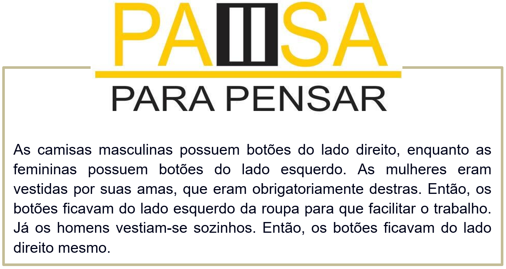
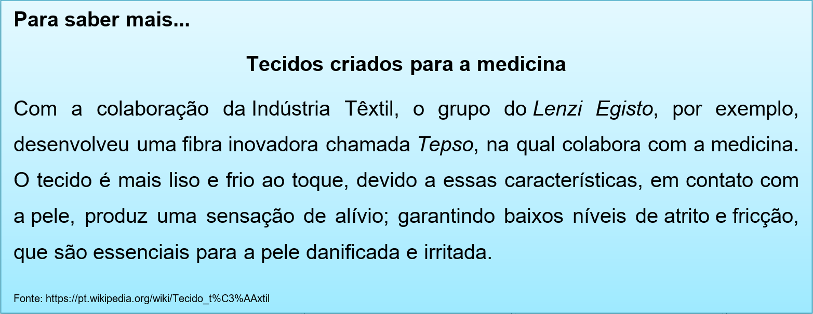
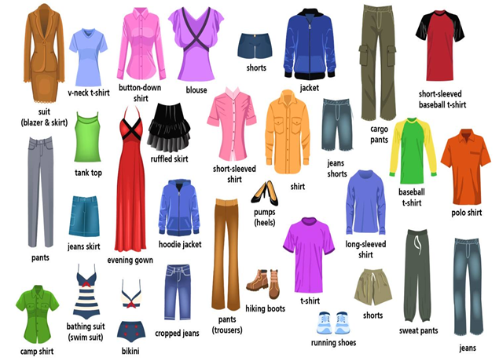
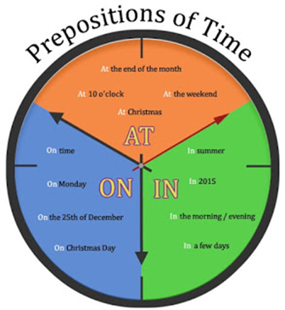

Capítulo 4: Textile and Clothes – Têxtil e Vestuário
As indústrias de tecidos e roupas dos EUA estão concentradas, principalmente, nos estados de Boston, Alabama e Geórgia. Essas indústrias utilizam ampla mecanização no sistema de produção fabril e trabalham com mão de obra especializada e qualificada. Atualmente, os EUA são um dos maiores produtores de tecidos do mundo.
Nessa unidade vamos expandir nosso vocabulário na indústria têxtil e de vestuário.

Tecidos – woof
cloth > fazenda
cotton > algodão
lace > renda
leather > cabedal
linen > linho
man-made fibres > fibras sintéticas
nylon > nylon
polyester > poliester
silk > seda
wool > lã

Clothing vocabulary – Vocabulário de roupas
Observe nosso dicionário ilustrado e conheça novas palavras relacionadas às roupas.
Assista ao vídeo para aprender mais sobre roupas
Reconstruindo conhecimentos – Preposições de tempo: in, on, at
As preposições são meios de que a língua dispõe para determinar ligações entre as palavras, grupos de palavras, frases e, ao mesmo tempo, expressar determinadas relações de significado entre essas unidades. Para expressar essa ligação, utilizamos bastante, em Inglês, as seguintes preposições: in, on e at. Essas preposições servem para nos dar ideia de tempo.
O uso do in:
O In é mais geral e aborda mais temas, utilizamos o in para: séculos, décadas, anos, meses, períodos do dia(com exceção do night), estações do ano e semanas.
Exemplo:
Séculos:
in the 19th century (No século 19)
Décadas:
in the sixties (Nos anos 60)
in the 90s (Nos anos 90)
Anos:
in 1992(em 1992)
in 2006(em 2006)
Meses:
in December (em dezembro)
in June (em Junho)
Estações do ano:
in winter (no inverno)
Períodos do dia:
in the morning (de manhã)
Assista ao vídeo para aprender mais sobre preposições de tempo
O uso do on:
O on é mais específico que o in mas ainda assim aborda os dias da semana, dias do fim de semana e datas.
Dias da semana
on Monday (na segunda)
on Tuesday (Na terça)
on weekdays (nos dias da semana)
Fins de semana:
on Saturday (No sábado)
on Sunday (No domingo)
on weekends (Nos fins de semana)
Datas
on my birthday (No meu aniversário)
on Christmas day (No dia Natal)
on june 20th (dia 20 de junho)
on 20th of June (dia 20 de junho)
O uso do at:
O at é ainda mais específico e aborda as horas e datas comemorativas como Natal, Páscoa, etc.
horas
at 8pm (às 8 da noite)
at midnight (à meia noite)
at 6:30 (às 6:30)
at dinner (no jantar)
at breakfast (no café da manhã)
datas comemorativas
at Christmas (No natal)
O que aprendi
• Utilizar as preposições de tempo: in, on, at;
• Expandimos o vocabulário têxtil e de vestuário;
• Expandimos conhecimentos sobre o alumínio;
• Aprendemos que há tecidos especiais para a medicina;
• E vimos uma curiosidade histórica sobre botões.
Observe o resumo das preposições de tempo.
Praticando
Observe os personagens e faça a lista do que cada um está wearing (vestindo)
George wears jeans, shirt and tie.
Angelina wears ________________________
Tom Bruise wears ______________________
Nicolas Rage wears ____________________
Kate Mudson wears _____________________
Observe os usos das preposições de tempo, escolha a preposição correta para cada frase.